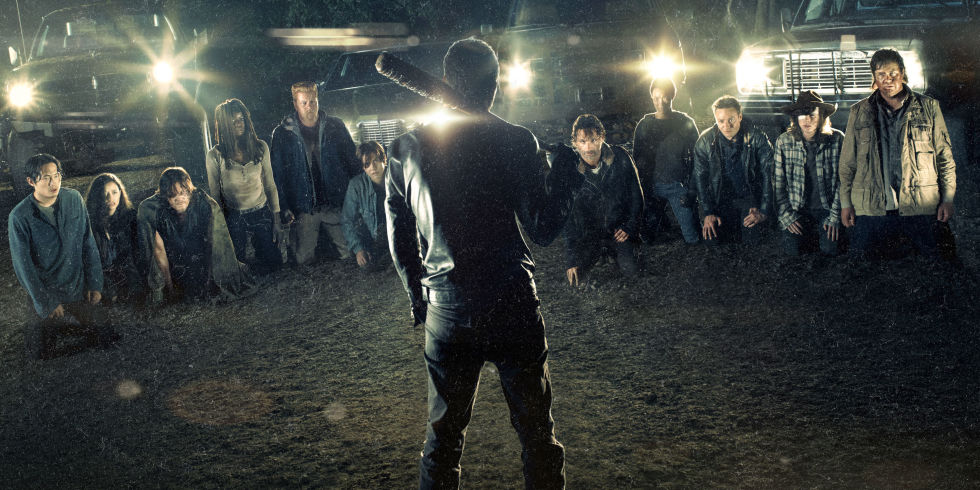

Rafael Henrique | 18 Anos | @faaellx |
gomes24menez@gmail.com | Aríes
The Walking Dead
Curto: 8/10

The Walking Dead e sobre um apocalipise zumbi que está
acontecendo no mundo, e acompanhamos a tragetoria de
Rick Grymes para encontrar sua familia em meio de todo esse caos.
Demon Slayer conta sobre um jovem que ganha a vida vendendo carvão até descobrir que sua família
foi massacrada por um demônio, restando apenas sua irmã, Nezuko, que foi infectada e está se tornando
um monstro. O protagonista, então, decide virar um caçador de demônios e buscar vingança.
Deedpool Wade Wilson é um ex-agente especial que passou a trabalhar como mercenário.
Seu mundo é destruído quando um cientista maligno o tortura e o desfigura completamente.
O experimento brutal transforma Wade em Deadpool, que ganha poderes especiais de cura e
uma força aprimorada. Com a ajuda de aliados poderosos e um senso de humor mais desbocado
e cínico do que nunca, o irreverente anti-herói usa habilidades e métodos violentos para se vingar
do homem que quase acabou com a sua vida.
The Batman Após dois anos espreitando as ruas como Batman, Bruce Wayne se encontra nas profundezas mais sombrias
de Gotham City. Com poucos aliados confiáveis, o vigilante solitário se estabelece como a personificação da vingança para a
população.
Chainsaw Man Denji é um adolescente que mora com Pochita, o Demônio da Motosserra.
Por conta das dívidas que herdou de seu pai, ele vive na miséria, exterminando outros demônios
com Pochita para pagar as contas. Até que, um dia, Denji é traido e morre.